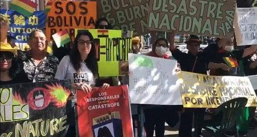
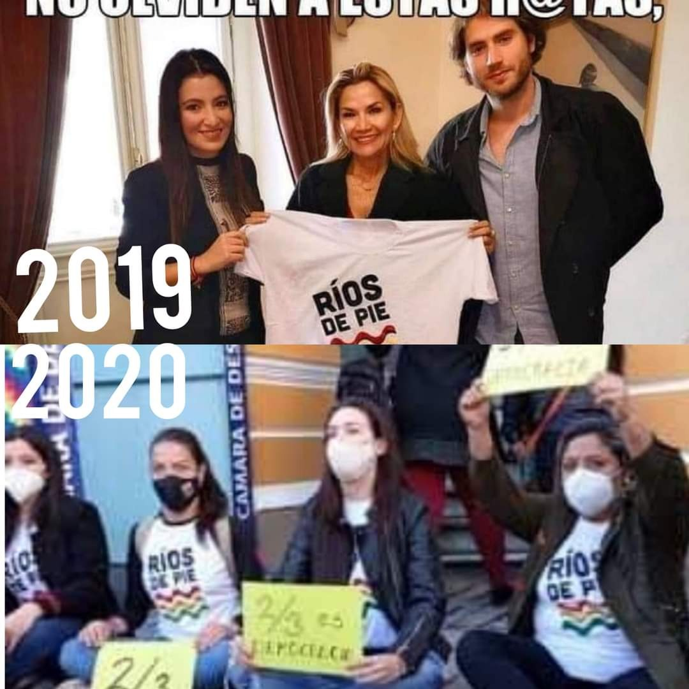
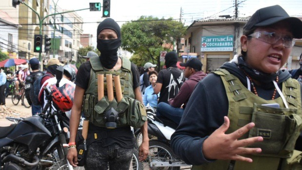
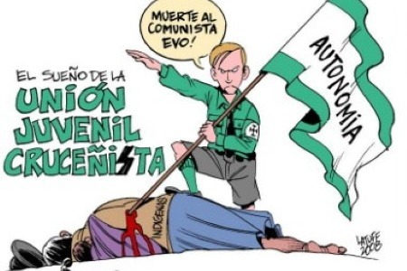
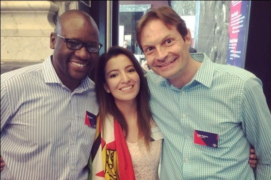

Reverdecer el capitalismo
la estrategia de ONGs derechistas para manipular la defensa del Medio Ambiente

Cuando eres joven, sensible y sobre todo amante de los animales y plantas; buscas, consultas y decides estudiar una carrera relacionada y la inclinación es hacia la carrera de Biología, Medio Ambiente, Recursos Naturales, Agronomía, Veterinaria y otras relacionadas a esas preferencias.
En el transcurso, no solo adquieres conocimientos científicos, sino también conoces la normas ambientales vigentes, conoces cómo funciona la biología de las especies, su ecología, las funciones ambientales o la biología molecular, no solo identificas la potencialidad y la importancia de los recursos naturales, sino también te das cuenta que tienes una gran tarea cuando eres profesional.
Te das cuenta que tu deber es aportar con tus conocimientos en la conservación de las especies y los recursos naturales, aportando en el desarrollo de tu país de una manera adecuada, con respeto y en armonía con el medio ambiente.
No obstante el medio ambiente, la conservación de las especies, los recursos naturales desde hace años, también han sido utilizados como objetos dinámicos para intentar reciclar y disfrazar al capitalismo consumista y mantener los territorios indígenas bajo el poder de potenciales grupos de personas y gobiernos neoliberales y de derecha.
El capitalismo disfrazado de medio ambiente
Después de la Cumbre de la Diversidad Biológica de 1992, realizada en Río de Janeiro, Brasil, muchos economistas neoliberales propusieron que la ecología debería estar incluida en el sistema económico, es decir, que los bienes comunes ecológicos, como los bosques, el agua, las cuencas, las especies, los genes y los ecosistemas, necesitan tener precio como capital natural; este hecho legitimó la privatización de los bienes comunes ecológicos a través del enclaustramiento, dado que se le dio al Banco Mundial el poder de avanzar sus prescripciones para manejar la política ecológica del capital global.
Latinoamérica y países como Bolivia ricos en biodiversidad, recursos hídricos, forestales, minerales, hidrocarburos, semillas, suelos y otros, han sido punto clave para la toma de poder de gobiernos neoliberales que profundizaron el colonialismo y fomentaron la incursión de ONG´s, y otras instituciones que se crearon para manejar y distraer a la población en nombre de la conservación del medio ambiente y sus recursos naturales, provocando crisis que tuvieron efectos muy negativos en las comunidades indígenas y en la naturaleza.
Organizaciones que a nombre de la conservación durante mucho tiempo, recibieron financiamiento extranjero con el objetivo de crear igualdad social, reducir la pobreza, confrontar la destrucción de la ecología y combatir el cambio climático. Estudiaron las naciones indígenas, sus culturas, sus relaciones sociales y con el medio ambiente, para luego determinar cómo deben realizar sus actividades de sobrevivencia, como deben vivir con su medio ambiente, como deben manejar su territorio y sobre todo cómo y cuándo deben aprovechar sus recursos naturales, cuando los pueblos indígenas ya saben cómo hacerlo debido a que cientos años pertenecieron a ese territorio.
Por otra parte, vale mencionar también que las áreas protegidas por sus antecedentes no solo sirvieron para cuidar y conservar la fauna, la flora y los ecosistemas; sino también sirvieron como sitios estratégicos para permitir avasallamientos, enajenación de territorios indígenas, de apropiación de áreas forestales y latifundistas.
Estas organizaciones no solamente las agrupaciones que son financiadas por estos organismos internacionales y conforman plataformas tomando el discurso del medio ambiente han existido desde hace muchos años, siempre fueron identificadas como movimientos de derecha, en apoyo a gobiernos neoliberales. En Latinoamérica hay ejemplos contundentes de los mismos.
En Bolivia en los últimos 14 años las políticas ambientales han buscado seguir el patrón de los objetivos del Estado Plurinacional, ser un país digno, soberano y democrático. Así mismo, trabajar en su autodeterminación tanto a nivel social, político y económico, basado en el manejo de nuestros propios recursos naturales para alcanzar el desarrollo.
En este proceso se reconocieron los roles fundamentales de la madre tierra, sus funciones ambientales y sus derechos, promoviendo a los territorios indígenas y a todas las naciones indígenas a manejar y aprovechar sus recursos naturales, sin la injerencia de terceros y/u organismos internacionales. Sin embargo, también muchas actividades y proyectos de desarrollo se hicieron sin escuchar la voz del pueblo, sobre todo sin sentir el impacto que estos podrían generar en sus mismos territorios en cuanto a la contaminación de los ríos, a la destrucción de paisajes naturales, a la deforestación, a la perdida de hábitats y al cambio y perturbación ecológica.
En el caso de Bolivia utilizaron las debilidades para levantar temas ambientales como es el caso de los incendios de 2019, para alarmar y manipular a la población y crear mensajes negativos de repulsión al gobierno de Evo Morales, esta estrategia se conoce como extinction rebellion.
La estrategia extinction rebellion indica que es “un movimiento social mundial cuyo objetivo es influir en los gobiernos del mundo y las políticas medioambientales globales, mediante la resistencia “no violenta” para minimizar la extinción masiva de animales y plantas, y el calentamiento global, a través de la desobediencia civil”, además de crear un ícono internacional y una movilización en otros países, tal como se vivió en los incendios de la Chiquitanía el 2019, con las manifestaciones fuera de las embajadas de Bolivia en otros países.

Esta estrategia, como la manipulación constante del término no violencia, fue clave y muy utilizada por agrupaciones que buscan desestabilizar los gobiernos, no solo en América Latina, también tenemos el ejemplo de Srdja Popovic biólogo y activista político serbio, líder del movimiento estudiantil Otpor que ayudó a derrocar al presidente de Serbia.
Así mismo, no olvidemos a la adolescente de 16 años Greta Thunberg con el movimiento Fridays for future, icono sobre el cambio climático, pero también imagen para promover el capitalismo verde, porque no buscan soluciones de fondo al problema de explotación irracional de los recursos, como lo hace el sistema capitalista, sino simplemente promueven soluciones superficiales

A Ríos de pie realmente le interesa el medio ambiente?
En los incendios de la Chiquitanía boliviana el 2019 apareció una pequeña agrupación llamada Ríos de pie, conformada por jóvenes que estudiaron en el extranjero, tal el caso de Jhanisse Vaca Daza, quien es la imagen destacada de esta agrupación.
En una entrevista Jhanisse Vaca Daza indicó que era activista de:
- Los derechos humanos a causa de los sucesos ocurridos en la Calancha, promueve una protesta basada en
- la no violencia en la cual además había realizado un postgrado y le interesa
- el medio ambiente debido a los incendios en la Chiquitania el 2019.
Tal cual, a la población que no le gusta buscar la post verdad y solo ven lo que quieren ver, la entrevista les muestra una persona inocente, cuyas razones de protesta nacen de la injusticia y de su amor por la vida. Sin embargo, es importante conocer el siniestro antecedente que existe y las intenciones golpistas que se encubren detrás de ella, que hasta la fecha le ha costado muy caro a Bolivia.
¿Cómo surge la movilización de Ríos de pie y es parte del golpe de estado?
El golpe de estado el año 2019 comienza a articularse con los incendios de la Chiquitania atribuyéndole toda la responsabilidad a la modificación del artículo 5 mediante el D.S.3973 el cual incluye al departamento del Beni, el cual fue aprobado en el gobierno de Hugo Banzer Suárez el 16 de febrero de 2001 con siete artículos, resaltando el art. 5 que indica “que en el Departamento de Santa Cruz de la Sierra, se permite el desmonte sujeto a la aprobación del POP por parte de la Superintendencia Agraria y la Superintendencia Forestal…, se permiten las quemas de acuerdo al Reglamento Especial de Desmonte y Quemas Controladas”. Los incendios en Bolivia son un patrón de todos los años FAN, 2014, es difícil conocer las causas exactas por las que se originan, estos pueden ser a causa de chaqueo tradicional para la agricultura o la habilitación de un chaco por quema controlada, así mismo, las variaciones de clima y la época seca intervienen en el mismo de forma negativa. Para esto, existe el monitoreo y registro de los mismos durante todo el año por instituciones gubernamentales y no gubernamentales, es así que datos históricos del CEDIB en una publicación en septiembre de este año (2020) indican que en el mes de julio ya se pronosticaba una época crítica debido al alto riesgo de incendios forestales, lo que sorprende es que bajo qué criterios y análisis científicos es que se basaron para ese dicho pronóstico, o ¿es que algo ya sabían que pasaría?

Impresionantemente los incendios del 2019 fueron tres veces más graves que otros años, sin embargo, a pesar que se desconoce las causas que lo originaron, no se descarta las teorías de la participación de personas con intenciones de que esto agravara, es así también que se registraron arrestos de personas que estaban promoviendo el incendio.
Lo más interesante, es que surgieron movilizaciones no solo de grupos de profesionales ambientales, como los Colegios de Biólogos, también asociaciones que protegen la vida animal como APLAB y otros, que en realidad su preocupación y el apoyo ha sido muy importante el 2019 y como es importante todos los años, puesto que son los que se preocupan de manera constante no solo de incendios forestales y el impacto a la fauna, sino también de tráfico ilegal, de deforestación, del maltrato animal y otros que suceden a lo largo del año.
Pero vale mencionar también que se identificaron agrupaciones con otros fines, puesto que solo se preocuparon de los incendios el 2019, justo antes que se lleven a cabo las elecciones nacionales.

Ríos de pie, una organización que se movilizó intensamente cuando solo le preocupo el incendio en la Chiquitania el 2019, puesto que en los incendios del 2020 no se expresaron con la misma intensidad.
Llama también mucho la atención que dicha organización no emitiera ningún comunicado ni protesta sobre la aprobación del D.S. 4232 del 07 de mayo del 2020 que autoriza al Comité Nacional de Bioseguridad establecer procedimientos abreviados para la evaluación del maíz, caña de azúcar, algodón, trigo y soya, genéticamente modificados en sus diferentes eventos, destinados al abastecimiento del consumo interno y comercialización externa; aspecto que viola artículos de la Constitución Política del Estado, la Ley de la Madre Tierra, el Convenio sobre la Diversidad Biológica y el Protocolo de Cartagena.

Ríos de pie, que también dice defender los derechos humanos, no emitieron criterios sobre la represión militar dirigida por Luis Fernando López y Yanine Añez en Senkata, La Paz y Sacaba; tampoco no se movilizaron por los asesinatos y los lesionados en los enfrentamientos por la lucha y la de defensa del voto denunciados en noviembre del 2019; la represión de los pueblos indígenas en las comunidades, o ¿es que la Calancha como indica Jhanisse Vaca Daza fue más conmovedor que lo que se vivió en el golpe de estado del 2019? Informe caso la calancha.

Dos palabras que sostiene siempre Ríos de Pie es la No Violencia, aspecto que dice ser los destaca; pues dicen que aquellos que usan tapabocas, mochilas o gorras generalmente son los violentos y generan enfrentamientos. Juzguen ustedes, cuando se sabe que tomaron instituciones como Bolivia TV en Santa Cruz, cuando se aliaron a los comités cívicos, a la Unión Juvenil Cruceñista y Cochala para dar el golpe de estado, cuando fueron los identificados en las represiones golpeando y masacrando al pueblo, dicen ser lo no violentos cuando son los violentos con estudios para camuflar eso. Pues fueron capacitados en el Centro para la Aplicación de Estrategias y Acción No Violenta – CANVAS, en el cual se graduó Vaca Daza en la Escuela Kennedy de Harvard (según el artículo de Wyatt Reed en The Gray Zone).


Vale conocer que CANVAS es financiado en gran medida a través de la National Endowment for Democracy, un dispositivo informal de la CIA, que funciona como el brazo principal del gobierno de los Estados Unidos para promover el cambio de régimen.


¿Quién es la persona del lado izquierdo de Jhanisse Vaca Daza? Srdja Popovic es un biólogo y activista serbio. Es director del Centro para la Aplicación de Estrategias y Acción No Violenta – CANVAS y fue uno de los líderes del movimiento estudiantil Otpor, que ayudo a derrocar al presidente de Serbia, Slobodan Milosevic, mediante una campaña masiva no violenta. CANVAS es una institución sin fines de lucro que depende únicamente de la financiación privada, tiene una red de formadores y consultores internacionales con experiencia en movimientos sociales; sostiene y aboga por el uso de la resistencia no violenta para promover los derechos humanos y la democracia. Trabaja con activistas de más de 50 países, incluidos Irán, Zimbabwe, Birmania, Venezuela, Ucrania, Georgia, Palestina, Sahara Occidental, Papúa Occidental, Eritrea, Bielorrusia, Azerbaiyán, Tonga, Túnez y Egipto. La mayoría de los activistas en Latinoamérica vinculados a la no violencia y a los derechos humanos son jóvenes, misteriosamente siempre vinculados a políticos de ex gobiernos de derecha, también formados en la misma línea “pacífica”, “ecologista”, “democrática”, pidiendo por los derechos humanos, la no violencia y a favor de la conservación del medio ambiente. Como Ríos de pie con estudios en Harvard Estados Unidos, formados por CANVAS, vinculados a golpistas venezolanos como Thor Halvorssen, Leopoldo López a través de su Fundación de Derechos Humanos, estratégicos promoviendo acciones golpistas, acciones violentas y de discriminación, para derrocar gobiernos socialistas.

Así se puede observar que hay ONGs que son simples instrumentos de injerencia, que defienden intereses foráneos, y que manipulan y enarbolan los más nobles sentimientos de jóvenes que luchan por vivir bien, pero que por desconocimiento terminan siendo usados para otros fines. A esto debemos estar alertas.
NO MÁS CAPITALISMO EN NOMBRE DEL MEDIO AMBIENTE
LA LUCHA CONTINÚA … HASTA LA VICTORIA SIEMPRE